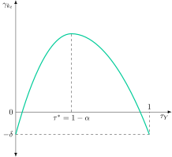
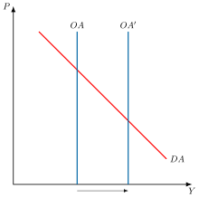
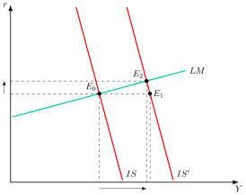
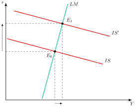
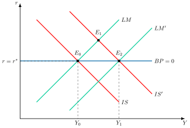
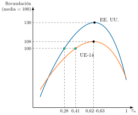

Apuntes para la oposición al Cuerpo de Diplomados Comerciales del Estado
8 La política fiscal: efectos sobre el crecimiento económico y el ahorro. Políticas de oferta.
Tema pendiente de revisión. Este tema está publicado pero aún no lo he revisado a fondo: puede contener erratas o partes por pulir.
8.1 Introducción  1'
1'
¿Puede el Estado sacar a una economía de una recesión gastando más? ¿Y puede, con sus impuestos y su gasto, hacer que crezca y ahorre? La primera pregunta mira a la demanda y volvió al centro del debate económico durante la Gran Recesión y la pandemia, con respuestas como el Next Generation EU. La segunda se centra en la oferta, con objetivos generalmente a largo plazo y de carácter estructural.
Ambas remiten a la política fiscal, la acción de las autoridades económicas dirigida a modificar los programas de ingresos y gastos públicos para alcanzar determinados objetivos macroeconómicos, que Musgrave (1959) agrupó en asignación, distribución y estabilización.1
Por consiguiente, el objetivo del presente tema es analizar los efectos de la política fiscal sobre la estabilización del ciclo, el ahorro y el crecimiento económico, así como su papel en las políticas de oferta, a través del siguiente esquema:
La política fiscal como instrumento de estabilización.
Efectos de la política fiscal sobre el ahorro.
Efectos de la política fiscal sobre el crecimiento.
El papel de la política fiscal sobre la oferta.
8.2 La política fiscal como instrumento de estabilización 7'
Instrumentos de política fiscal
La política fiscal actúa sobre el gasto agregado, y por lo tanto sobre los niveles de producción y precios, mediante los estabilizadores automáticos y las actuaciones discrecionales.
Estabilizadores automáticos
Los estabilizadores automáticos son los ingresos y gastos públicos que varían por sí solos con el ciclo, sin que el gobierno tome ninguna decisión, y que amortiguan así las fluctuaciones de la demanda.2 Actúan tanto:
Por el lado de los ingresos, sobre todo por los impuestos directos pues al ser más progresivos producen un efecto más pronunciado ya que a mayor demanda agregada, mayor renta, mayor la tasa impositiva y por lo tanto menor demanda agregada y viceversa. Su efectividad dependerá de la progresividad del impuesto y del nivel de renta antes de la expansión de demanda.
Por el lado del gasto, a través del pago de transferencias (principalmente prestaciones por desempleo) amortiguando la caída de la renta disponible ante un shock, aumentando el gasto total y por ende la demanda agregada.
No obstante, los estabilizadores automáticos tienen inconvenientes ya que:
Actúan cuando ya se ha producido el shock.
Disminuyen las fluctuaciones pero no las eliminan por completo.3
Actuaciones discrecionales
Por otro lado, las actuaciones discrecionales son las medidas de gasto o de impuestos que el gobierno aprueba expresamente para influir en la actividad. Su utilización dependerá de la duración de los cambios y de los efectos deseados. Distinguimos entre:
Gasto público, un gobierno puede decidir iniciar un gran proyecto de infraestructura, aumentar los salarios de los funcionarios o lanzar un nuevo plan de inversión pública para estimular la economía (política expansiva). De forma contraria, puede recortar el gasto para controlar el déficit (política contractiva).
Impuestos, el gobierno puede aprobar una reforma fiscal para bajar el IVA, reducir el Impuesto de Sociedades o introducir una nueva deducción para fomentar la inversión (política expansiva). También puede subir los impuestos para reducir el déficit y la deuda (política contractiva).4
El debate tradicional: efecto multiplicador y efecto expulsión
En el corto plazo, con precios fijos, la oferta agregada es horizontal y el nivel de renta lo determina la demanda agregada. Por eso, en el marco del modelo IS-LM, la política fiscal es en principio eficaz para estabilizar la producción. El multiplicador del gasto público es la variación de la renta, \(Y\), por cada unidad adicional de gasto público, \(G\). Este depende de la propensión marginal a consumir, \(c\), del tipo impositivo sobre la renta, \(\tau\), de la sensibilidad de la inversión al tipo de interés, \(b\), y de la sensibilidad de la demanda de dinero a la renta, \(k\), y al tipo de interés, \(h\): \[\dfrac{dY}{dG}=\dfrac{1}{1-c\cdot\left(1-\tau\right)+\dfrac{b\cdot k}{h}} \tag{8.1}\]
Cuanto mayor es el término \(b\cdot k/h\), mayor es la parte del impulso que se pierde por la subida del tipo de interés y menor es el multiplicador.5
Gráficamente, en un plano de tipo de interés, \(r\), y renta, \(Y\), como el de la Figura 8.1, se representan las curvas IS y LM, que parten de un equilibrio inicial, \(E_{0}\). Una política fiscal expansiva desplaza la curva IS hasta \(\text{IS}'\) y produce dos efectos. Así:
Efecto multiplicador o renta (de \(E_{0}\) a \(E_{1}\)): el aumento del gasto público (o la disminución de los impuestos) aumenta la renta a través del multiplicador, como si el tipo de interés no variara.
Efecto expulsión o crowding out (de \(E_{1}\) a \(E_{2}\)): el aumento de la renta incrementa la demanda de dinero, el tipo de interés se eleva, la inversión disminuye y la renta cae hasta el equilibrio final.

El peso relativo de ambos efectos depende de \(b\) y de \(h\), y en torno a ello se enfrentaron dos visiones:
Los keynesianos defienden una política fiscal muy eficaz por los “dos eslabones débiles”: la inversión es poco sensible al tipo de interés (\(b\) bajo), porque depende de los animal spirits, y la demanda de dinero es muy sensible a él (\(h\) alto). En el caso extremo de la trampa de liquidez, \(h\) tiende a infinito, el término \(b\cdot k/h\) se anula y no hay efecto expulsión.
Los monetaristas sostienen lo contrario: la inversión es muy sensible al tipo de interés (\(b\) alto) y la demanda de dinero, que depende sobre todo de la renta permanente, apenas lo es (\(h\) bajo). El efecto expulsión es entonces casi total y la política fiscal resulta poco eficaz.
En una economía abierta, la eficacia depende además del régimen cambiario y de la movilidad de capitales. Con movilidad perfecta, la política fiscal es muy eficaz con tipo de cambio fijo, porque el banco central amplía la oferta monetaria para defender la paridad, e ineficaz con tipo de cambio flexible, porque la apreciación de la moneda reduce las exportaciones netas y compensa el impulso fiscal.6 En una unión monetaria, como la del euro, la pérdida de una política monetaria propia, unida a la rigidez de precios, da a la política fiscal nacional un papel estabilizador, deseable tanto para cada país como para la unión (Galı́ y Monacelli 2008).
Nueva Macroeconomía Clásica
Sin embargo, este debate tradicional, propio de los años 60, se basa en modelos macroeconómicos que carecen de una fundamentación microeconómica del comportamiento de los agentes.
Con la revolución de las expectativas racionales y la crítica de Lucas (1976), la modelización macroeconómica se ha centrado en la obtención de relaciones agregadas microfundamentadas a partir del comportamiento optimizador de los agentes.
De esta forma, los modelos de Nueva Macroeconomía Clásica, al incorporar la hipótesis de expectativas racionales en la curva de Phillips, implican que solo los movimientos no anticipados de la política monetaria pueden afectar al nivel de producción, mientras que los anticipados solo generan inflación.
De este modo, la curva de oferta sería vertical y las políticas de demanda anticipadas no tendrían efectos sobre la producción. La versión de equilibrio general de este enfoque son los modelos del ciclo real, que se caracterizan por incorporar expectativas racionales y agentes con un comportamiento forward looking.
Así, conviven 3 tipos de agentes económicos:
Los hogares, que maximizan su función de utilidad intertemporal sujetos a restricción presupuestaria
Las empresas, que maximizan los beneficios descontados, sujetos a una restricción tecnológica.
El gobierno, que determina el gasto público y su financiación (impuestos de suma fija y bonos).
Concretamente, en estos modelos de ciclo real como el de Kydland y Prescott (1982), se asume la flexibilidad de precios y se pone énfasis en la importancia de los shocks de naturaleza real, como los tecnológicos y los que inciden sobre las preferencias.
No obstante, también se realiza un análisis de la política fiscal: un resultado clave sobre la eficacia de la política fiscal de los modelos es la equivalencia ricardiana, según la cual el mecanismo de financiación del gasto público, mediante deuda o impuestos, es irrelevante7.
Efectos del gasto público
Con este marco, se estudia a través de qué canales tiene efecto la política fiscal y cuál es su magnitud y sus consecuencias:
Los agentes son perfectamente racionales y su horizonte de vida es infinito, por lo que se cumple la equivalencia ricardiana.
En este contexto un incremento del gasto público implicará un incremento futuro de los impuestos para financiarlo, por lo que se reduce el valor presente de la renta neta de los hogares. Es el efecto riqueza negativo, que lleva a consumir menos y a trabajar más.
Como consecuencia, los hogares reducirán su consumo e incrementarán su oferta de trabajo. Si el gasto público no ha aumentado la demanda de trabajo el incremento en la oferta de trabajo conllevará una reducción del salario real, pero a cambio aumentará el empleo.
En definitiva, el nivel de producción de la economía aumentará y el valor del multiplicador del gasto público será positivo. Su magnitud dependerá de si el incremento en gasto público es temporal o permanente:
Incremento transitorio en \(G_{t}\): si el gasto solo aumenta temporalmente, la riqueza total de los agentes solo se reducirá marginalmente, por lo que los hogares apenas reducirán el consumo y el ahorro nacional caerá. Para que \(Y=C+I+G\) se siga cumpliendo, la inversión caerá en una cuantía similar al gasto público, produciéndose un efecto crowding-out sobre la inversión privada. El multiplicador será cercano a 0.
Incremento permanente en \(G_{t}\): la reducción de riqueza total es significativa, por lo que se reduce el consumo y se incrementa la oferta de trabajo. Esta produce un incremento de la productividad marginal del capital, \(PMg_{K}\), por lo que se incrementará la inversión ante el aumento de su rentabilidad, en lo que Baxter y King (1993) denominan efecto ampliación. Así, en función de los parámetros del modelo, el multiplicador puede ser superior a 18.
En conclusión, en el contexto de la NMC, los efectos expansivos del gasto público se deben al efecto riqueza negativo y al consiguiente aumento de la oferta de trabajo9.
Impuestos distorsionantes
La equivalencia ricardiana se rompe si los impuestos no son de suma fija. Un impuesto de suma fija es aquel cuya cuantía no depende de ninguna decisión del contribuyente, por lo que no altera sus incentivos. Un impuesto distorsionante, en cambio, grava lo que el contribuyente decide hacer (trabajar, consumir o ahorrar) y altera los precios relativos que afronta.10 Este es el caso cuando existen impuestos distorsionantes que modifican la valoración del consumo actual y el consumo futuro, provocando que la senda impositiva sea relevante11.
Así distinguiremos entre:
Rebaja de impuestos sobre el consumo y el trabajo: La reducción de los impuestos sobre el trabajo y el consumo tienen el mismo efecto: el consumo se abarata relativamente con respecto al ocio. Por tanto, el consumo aumenta, al igual que el trabajo. La mayor oferta de trabajo incrementa la productividad marginal del capital, \(PMg_{K}\), lo que se traduce en un aumento de la inversión. Como consecuencia se produce un incremento permanente en la producción.
Rebaja de impuestos sobre el capital: Una reducción de los impuestos sobre el capital hace más atractivo el ahorro, por lo que baja el consumo temporalmente y aumenta la inversión. Esta se traduce en un aumento del stock de capital, que incrementa la productividad marginal del trabajo, \(PMg_{L}\), que se traduce en un incremento de la oferta de trabajo y en una reducción del ocio. La producción y el consumo aumentan de forma permanente.
Conclusiones de la NMC
Dentro del marco de pensamiento de la NMC, la política fiscal tiene efectos expansivos como consecuencia del efecto riqueza negativo, que eleva la oferta de trabajo y la producción, poco y de forma pasajera si el aumento del gasto es transitorio, y más y de forma duradera si es permanente. No obstante, la financiación de la política fiscal en forma de incremento del gasto público a través de impuestos distorsionantes puede tener efectos negativos y permanentes sobre el nivel de producción.
Nueva Economía Keynesiana
Por otro lado, los modelos neokeynesianos siguen una estrategia de modelización similar a la de los modelos del ciclo real, asumiendo expectativas racionales y derivando las relaciones agregadas a partir de las decisiones microfundamentadas de los agentes.
Sin embargo, difieren en la introducción de competencia monopolística y rigideces de precios12. El carácter microfundamentado y la presencia de expectativas racionales hacen que en el modelo estándar neokeynesiano opere el mismo mecanismo de transmisión de la política fiscal que en los modelos del ciclo real: un incremento del gasto público genera un efecto riqueza negativo, mientras que una rebaja de impuestos de suma fija financiada con deuda no altera la riqueza de los hogares.
No obstante, la existencia de rigideces nominales hace que exista un segundo canal de transmisión de la política fiscal:
En presencia de competencia monopolística en los mercados de bienes y de rigideces de precios, el empleo y el nivel de producción quedarán determinados por el lado de la demanda.
De este modo, es posible que un aumento del gasto público dé lugar a un aumento del salario real y del consumo.
El efecto total de la política fiscal dependerá del carácter acomodaticio de la política monetaria: si la autoridad monetaria responde a una política fiscal expansiva que tienda a elevar los precios aumentando los tipos de interés, el efecto expansivo de la política fiscal será menor.
Adicionalmente, el análisis reciente de la política fiscal en el marco de los modelos neokeynesianos se ha centrado en estudiar las condiciones bajo las cuales el multiplicador puede ser elevado, con especial atención a la existencia de restricciones de liquidez y a las situaciones en las que la política monetaria está limitada, como cuando los tipos de interés nominales alcanzan el límite inferior (zero lower bound).
Efectos de un aumento del gasto público
Como se ha señalado, en presencia de rigideces nominales, existen dos canales de transmisión del gasto público:
Por una parte, los agentes anticipan los incrementos de impuestos futuros necesarios para financiar ese aumento del gasto público, produciéndose un efecto riqueza negativo, que lleva a los hogares a reducir su consumo y aumentar su oferta de trabajo. Ese efecto es el mismo que en los modelos neoclásicos.
Por otra parte, la existencia de rigideces nominales hace que ante el aumento de la demanda agregada las empresas reaccionen incrementando su producción y aumentando su demanda de trabajo.
En el modelo neokeynesiano canónico, la existencia de competencia monopolística implica que el salario real no queda determinado solo por la productividad marginal, sino que depende también del margen, por lo que puede existir una divergencia o cuña (wedge) entre la productividad marginal del trabajo, \(F_{L}\), y el salario real, \(W/P\), a través del margen, \(\mu\): \[F_{L}=\mu\cdot\dfrac{W}{P} \tag{8.2}\]
Por lo tanto, si ante expansiones de la demanda el margen se reduce, se mantendrá equilibrio en el mercado de trabajo sin necesidad de que se reduzca el salario real. La presencia de rigideces nominales de precios implica que, ante un incremento del coste marginal, los precios no podrán ajustarse en la misma proporción, por lo que el margen se reducirá (será contracíclico).
De esta forma, ante una expansión del gasto público, las empresas elevarán su producción y su demanda de trabajo. El aumento de la demanda de trabajo podrá compensar la mayor oferta de trabajo generada por el efecto riqueza, produciéndose elevaciones de los salarios reales que compensarán parcialmente la caída del consumo por el efecto riqueza.
En el modelo neokeynesiano un aumento del gasto público produce un incremento de la demanda agregada y, como se ha explicado, del nivel de producción. Así:
En el modelo el output-gap (que depende positivamente del nivel de gasto público) aumenta pero en menor cuantía de lo que lo hace la producción. Se generan así presiones inflacionistas.
El Banco Central siguiendo la regla de Taylor responderá a las presiones inflacionistas y al mayor output-gap elevando los tipos de interés.
Ante el alza de tipos de interés los hogares reaccionarán sustituyendo consumo por ahorro, lo que atenuará el efecto expansivo de la política fiscal.
Ante un incremento transitorio del gasto público, el nivel de producción y la inflación se elevan de forma transitoria. El Banco Central responde elevando también los tipos de forma transitoria. Una vez que el gasto público retorna a su nivel anterior el Banco Central relaja su política monetaria, bajando los tipos de interés.
El valor del multiplicador depende de los parámetros del modelo:
Cuanto mayor sea la rigidez de precios, mayor será el multiplicador: con más rigidez, el margen cae más en la expansión (es más contracíclico) y, por lo tanto, la demanda de trabajo crece más.
Cuanto menor sea la sensibilidad del Banco Central a las desviaciones de la inflación y el output gap respecto de su objetivo: el Banco Central incrementará menos los tipos en respuesta al alza de la inflación y crecimiento del output generado por la expansión fiscal.
Cuanto menor sea la persistencia del shock de gasto público: cuanto más persistente sea el gasto mayor será la inflación esperada y mayor la respuesta del Banco Central. Por lo tanto, el efecto expansivo de la política fiscal en el modelo neokeynesiano va a depender de la respuesta del consumo y del carácter acomodaticio de la política monetaria.
En la práctica, la evidencia es muy dispersa. Gechert y Will (2012) revisaron 89 estudios y obtuvieron multiplicadores en torno a 0,8 de media, y Gechert y Rannenberg (2014) estimaron que los multiplicadores del gasto aumentan entre 0,6 y 0,8 unidades en las recesiones. Durante la crisis, Blanchard y Leigh (2013) concluyeron que los multiplicadores habían sido bastante mayores de lo que suponían los previsores.13
8.3 Efectos de la política fiscal sobre el ahorro 5'
La política fiscal afecta al ahorro a través de la forma de financiar el gasto, con impuestos o con deuda, y a través del diseño del sistema público de pensiones. El ahorro nacional es la suma del ahorro privado, la parte de la renta disponible que hogares y empresas no consumen, y del ahorro público, la diferencia entre los ingresos públicos y el gasto público.
La equivalencia ricardiana y sus límites
La equivalencia ricardiana fue formulada inicialmente por David Ricardo y formalizada más adelante por Barro (1974). Este teorema establece que, bajo ciertas condiciones y dada una senda de gasto público, la decisión de financiación entre impuestos o deuda no importa (consumo, inversión y producción no se ven afectados).
Específicamente, la deuda pública no será vista como riqueza por los agentes, sino como imposición atrasada, por lo que ante un incremento en la emisión de deuda, los agentes decidirán ahorrar más para compensar los mayores niveles de deuda.14
En cuanto a sus implicaciones de política económica, frente a otras teorías que establecen que la financiación a través de bonos en vez de impuestos incrementa el consumo, la equivalencia ricardiana establece que el efecto será nulo. No obstante, esta conclusión se apoya sobre supuestos muy restrictivos, como el horizonte de vida infinita de los agentes, los mercados de capitales perfectos y los impuestos de suma fija.15 Cuando alguno de ellos falla, la forma de financiación vuelve a importar:
Vida finita: si los individuos no están conectados con sus descendientes, parte de los impuestos futuros recaerá sobre otras generaciones y verán la deuda como riqueza neta. No obstante, Barro (1974) mostró que basta una cadena de transferencias intergeneracionales operativa para que actúen como si su horizonte fuera infinito.
Restricciones de liquidez: si los hogares no pueden endeudarse, su consumo depende de la renta disponible y una rebaja de impuestos financiada con deuda lo eleva. La evidencia de que el consumo aumenta tras un incremento del gasto público llevó a Galı́ et al. (2007) a introducir en el modelo neokeynesiano consumidores que gastan toda su renta corriente.
Impuestos distorsionantes: si los impuestos no son de suma fija, alteran la elección entre consumo presente y futuro y entre consumo y ocio, de modo que la senda temporal de los impuestos importa.
Partiendo de esta idea, Barro (1979) estudia la senda impositiva óptima a lo largo del tiempo, definida como aquella que minimiza los costes derivados de la distorsión impositiva, sujeta a un nivel de gasto público dado. La conclusión a la que llega es que la ratio entre impuestos y producción, \(\frac{T}{Y}\), se ha de mantener constante a lo largo del tiempo. Es decir, la senda impositiva debe ser alisada y el déficit absorbe los aumentos transitorios del gasto y las caídas transitorias de la renta, lo que constituye un fuerte argumento contra las rebajas contracíclicas de los tipos impositivos.
Generaciones solapadas, deuda pública y pensiones
La equivalencia ricardiana descansa en un horizonte infinito. El modelo de generaciones solapadas de Diamond (1965), que amplía el de Samuelson (1958) con capital y producción, abandona ese supuesto: los individuos viven dos periodos, juventud y vejez, trabajan y ahorran de jóvenes y consumen su ahorro de viejos. Con vida finita y sin herencias, la forma de financiar el gasto deja de ser neutral.16
Diamond (1965) mostró que la deuda pública reduce el stock de capital a largo plazo por dos vías:
Los impuestos necesarios para pagar los intereses reducen la renta disponible de los jóvenes y, con ella, su ahorro.
Cuando la deuda es interna, los bonos públicos sustituyen además al capital físico en las carteras de los ahorradores.
El mismo modelo muestra que el equilibrio competitivo puede ser ineficiente aunque no exista ninguno de los fallos de mercado habituales. Si el tipo de interés de equilibrio, \(r\), es inferior a la tasa de crecimiento de la población, \(n\), la economía acumula demasiado capital, lo que se conoce como ineficiencia dinámica, y todas las generaciones podrían consumir más ahorrando menos (Diamond 1965). La evidencia de Abel et al. (1989) sugirió que Estados Unidos y las grandes economías de la OCDE eran dinámicamente eficientes. No obstante, Blanchard (2019) subrayó que los tipos de interés seguros han estado a menudo por debajo de la tasa de crecimiento, lo que reduce el coste fiscal de la deuda, aunque esta siga reduciendo la acumulación de capital.
Los sistemas públicos de pensiones afectan al ahorro por la misma vía. Con utilidad logarítmica y un factor de descuento, \(\beta\), un joven con salario, \(w_{t}\), ahorra una fracción constante de su salario: \[s_{t}=\dfrac{\beta}{1+\beta}\cdot w_{t} \tag{8.3}\] Si el Estado le cobra una cotización con un tipo, \(d\), el resultado depende del destino de lo recaudado:
En un sistema de capitalización, la cotización se invierte y se devuelve con el rendimiento de mercado, \(1+r_{t+1}\). Es un ahorro forzoso que sustituye uno a uno al voluntario, \(s_{t}=\frac{\beta}{1+\beta}\cdot w_{t}-d\cdot w_{t}\), de modo que el ahorro nacional y el capital no cambian.
En un sistema de reparto, la cotización de los jóvenes paga la pensión de los viejos y su rendimiento implícito es el crecimiento de la población, \(1+n\), o de la masa salarial si también crece la productividad. No hay ahorro público y el ahorro privado se ajusta, además, según la diferencia entre ambos rendimientos: \[s_{t}=\dfrac{\beta}{1+\beta}\cdot w_{t}-d\cdot w_{t}-\dfrac{n-r_{t+1}}{\left(1+\beta\right)\cdot\left(1+r_{t+1}\right)}\cdot d\cdot w_{t} \tag{8.4}\] El ahorro nacional y el capital son menores que con capitalización. Si \(n>r\), el reparto ofrece más rendimiento que el mercado y, si la situación persiste, todas las generaciones mejoran su consumo. Si \(n<r\), todas salvo la primera generación de jubilados, que cobra sin haber cotizado, salen perdiendo.
De ahí que la sostenibilidad del reparto dependa de la demografía y de la productividad: una menor natalidad, un menor crecimiento de la productividad o una mayor esperanza de vida reducen su rendimiento implícito. Además, si los hogares ahorran menos de lo óptimo por sesgos de comportamiento, la inscripción automática en planes de pensiones con opción de salida puede elevar el ahorro sin restringir la elección.17
8.4 Efectos de la política fiscal sobre el crecimiento 4'
A largo plazo, la política fiscal puede alterar no solo el nivel de la producción sino también su ritmo de crecimiento, según cómo se recauden los impuestos y en qué se gaste.
El modelo de Ramsey con sector público
En el modelo de Ramsey-Cass-Koopmans, los hogares, con horizonte infinito, eligen cuánto consumir y ahorrar para maximizar su utilidad. Se añade un gobierno que compra una cantidad de bienes por trabajador, \(g\), que no afecta a la utilidad ni a la producción y se financia con impuestos de suma fija, y se supone por sencillez que la población no crece. Entonces la dinámica del consumo por trabajador, \(c\), y del capital por trabajador, \(k\), la describen dos ecuaciones.18 La primera es la ecuación de Euler, que depende de la producción por trabajador, \(f\left(k\right)\), de la inversa de la elasticidad de sustitución intertemporal, \(\sigma\), de la tasa de depreciación, \(\delta\), y de la tasa de descuento, \(\rho\). La segunda es la restricción de recursos: \[\gamma_{c}=\dfrac{\dot{c}_{t}}{c_{t}}=\dfrac{1}{\sigma}\cdot\left(f^{\prime}\left(k_{t}\right)-\delta-\rho\right) \tag{8.5}\] \[\dot{k}_{t}=f\left(k_{t}\right)-c_{t}-g-\delta\cdot k_{t} \tag{8.6}\]
En el estado estacionario, la ecuación de Euler fija el capital en \(f^{\prime}\left(k^{*}\right)=\rho+\delta\), que no depende del gasto público. Por eso, un aumento permanente de \(g\) desplaza hacia abajo la curva \(\dot{k}=0\) en la misma cuantía, pero no mueve la recta \(\dot{c}=0\). El consumo cae de inmediato tanto como sube el gasto y la economía pasa sin transición al nuevo estado estacionario, con el mismo capital y el mismo tipo de interés. Hay un efecto expulsión total, pero sobre el consumo privado, no sobre la inversión. Si el aumento es transitorio, el consumo cae menos, la economía desacumula capital mientras dura y vuelve al punto de partida cuando el gasto se normaliza (Romer 2019, 73-75).
La conclusión cambia si el gasto se financia con un impuesto distorsionante sobre los rendimientos netos del capital, con un tipo, \(\tau_{K}\). Los hogares solo perciben la fracción \(\left(1-\tau_{K}\right)\) de la rentabilidad neta y el estado estacionario pasa a cumplir: \[\left(1-\tau_{K}\right)\cdot\left(f^{\prime}\left(k^{*}\right)-\delta\right)=\rho\;\Rightarrow\;f^{\prime}\left(k^{*}\right)=\delta+\dfrac{\rho}{1-\tau_{K}} \tag{8.7}\] Como la productividad marginal es decreciente, un tipo más alto reduce el capital, la producción y el consumo de estado estacionario, aunque lo recaudado se devuelva a los hogares (Romer 2019 problema 2.10).
En el mismo sentido, si un aumento del gasto se financia con impuestos futuros sobre el trabajo y el consumo, los trabajadores sustituyen consumo por ocio. Si se financia con impuestos sobre el capital, se reduce la inversión. En ambos casos el aumento del gasto genera una pérdida permanente de producción a largo plazo.
De ahí el resultado de Chamley (1986) y Judd (1985): si la economía alcanza un estado estacionario, el tipo óptimo sobre las rentas del capital tiende a cero, porque gravarlas no sirve ni a la eficiencia ni a la redistribución a largo plazo. El resultado se refiere solo al estado estacionario y no dice cuánto gravar el capital durante la transición (Ljungqvist y Sargent 2018, 662 y 670).
En la práctica, Trabandt y Uhlig (2011) estimaron que tanto EE. UU. como la UE-14 están en el lado equivocado de la “colina de Laffer” respecto al impuesto sobre el capital: bajarlo y subir el del trabajo aumentaría la recaudación.
Gasto público productivo: el modelo de Barro (1990)
Si, en cambio, el gasto público es productivo, la política fiscal genera un trade-off en el crecimiento económico a largo plazo:
Tiene un impacto positivo sobre el crecimiento ya que algunos programas de gasto público en infraestructuras y educación aumentan el output potencial.
Pero también tiene un impacto negativo ya que dicho gasto público debe financiarse con impuestos, lo que reduce la renta disponible del sector privado y perjudica la inversión privada.
Vamos a analizar este trade-off a través de un modelo propuesto por Barro (1990) sobre crecimiento endógeno tipo AK.19
Partiendo del supuesto de que el gobierno realiza inversiones productivas que afectan al nivel de producción, Barro se pregunta cuál es la dimensión óptima del gobierno, en el sentido de cuál es la carga impositiva que maximiza el nivel y crecimiento de la producción.
De esta forma supone que el gasto público productivo, que entra en la función de producción y eleva la productividad del capital privado, es un flujo de servicios públicos que se presta a cada productor (un bien rival y excluible) y que no se acumula.
Así:
El gasto público por trabajador, \(g_{t}\), es deseable y entra como un input más en la función de producción, junto al capital privado, \(k_{t}\), y la productividad, \(A_{t}\): \[y_{t}=A_{t}\cdot k^{\alpha}_{t}\cdot g^{1-\alpha}_{t} \tag{8.8}\] donde \(\alpha\) representa la participación del capital en la producción.
Para financiar el gasto público, el gobierno introduce un impuesto proporcional al nivel de renta, con un tipo, \(\tau_{Y}\): \[g_{t}=\tau_{Y}\cdot y_{t} \tag{8.9}\]
Sustituyendo la restricción del gobierno en la función de producción, la producción pasa a ser lineal en el capital, como en un modelo AK. Si los hogares ahorran una fracción, \(s\), de su renta disponible y el capital se deprecia a una tasa, \(\delta\), la tasa de crecimiento del capital, \(\gamma_{k_{t}}\), es: \[\gamma_{k_{t}}=s\cdot\left(1-\tau_{Y}\right)\cdot A^{\frac{1}{\alpha}}\cdot\tau^{\frac{1-\alpha}{\alpha}}_{Y}-\delta \tag{8.10}\] El tipo impositivo actúa así por dos vías:
Reduce la renta disponible y el ahorro, a través del término \(\left(1-\tau_{Y}\right)\).
Financia un gasto público que eleva la productividad del capital, a través del término \(\tau^{\frac{1-\alpha}{\alpha}}_{Y}\).
Gráficamente, en un plano de tipo impositivo, \(\tau_{Y}\), y tasa de crecimiento del capital, \(\gamma_{k_{t}}\), como el de la Figura 8.2, se representa la relación entre ambas. Así:
Con \(\tau_{Y}=0\) no hay gasto público, la producción es nula y \(\gamma_{k_{t}}=-\delta\).
Con \(\tau_{Y}=1\) la renta disponible es nula, no hay ahorro y \(\gamma_{k_{t}}=-\delta\).
Entre ambos extremos la relación tiene forma de U invertida.

En este contexto, Barro llega a la conclusión de que el impuesto óptimo es \(\tau^{*}_{Y}=1-\alpha\), es decir, igual a la elasticidad de la producción respecto al gasto público, que es un parámetro tecnológico.
La intuición es que si la carga impositiva fuera menor, se estaría utilizando un nivel de capital excesivo, que sería más productivo si fuese transformado en gasto público, \(g\). Si la carga impositiva fuese mayor que la óptima, los rendimientos del gasto público serían menores que su coste. En el óptimo, el producto marginal del gasto público es igual a uno, \(\partial y/\partial g=1\), que es la condición natural de eficiencia productiva.
El propio Barro (1990) encontró evidencia entre países favorable a algunas de las hipótesis del modelo sobre el sector público y el crecimiento.
8.5 El papel de la política fiscal sobre la oferta 2'30"
Tras la crisis del petróleo de los años 70 y la aparición de la estanflación, la Macroeconomía se replanteó el papel de la política fiscal. La evidencia empírica, junto con los desarrollos teóricos de la Nueva Macroeconomía Clásica (NMC), la Nueva Economía Keynesiana (NEK) y la Economía de la Oferta, orientaron la política económica hacia objetivos de crecimiento a largo plazo.
El foco dejó de estar únicamente en la gestión de la demanda a corto plazo para pasar a la gestión de la oferta agregada, buscando impulsar el crecimiento a través de reformas que fomenten la innovación y eliminen rigideces. Gráficamente, en un plano de precios y renta como el de la Figura 8.3, estas políticas buscan expandir la capacidad productiva de la economía a largo plazo, es decir, desplazar hacia la derecha la oferta agregada de largo plazo, que es vertical porque la producción potencial no depende de los precios.

Las políticas de oferta son las medidas que buscan aumentar la producción potencial actuando sobre la cantidad y la eficiencia de los factores productivos. Incluyen la política fiscal de oferta y las reformas estructurales, que cambian el marco institucional y regulatorio de los mercados. Sus principales objetivos son:
Reforzar la flexibilidad, para que precios, salarios y recursos se ajusten con rapidez a las perturbaciones: aumentar la productividad y la rentabilidad de las inversiones, lo que genera un crecimiento económico dinámico y sostenible, con efectos positivos en el empleo y una mayor capacidad para absorber perturbaciones externas.
Mejorar la eficiencia en la asignación de recursos: fomentar la competencia en los mercados de bienes y servicios para reducir los costes, los precios y los márgenes de beneficio. Esto estimula el avance tecnológico y la diversificación, mejorando la asignación de recursos y el output.
Eliminar distorsiones e incentivar la competitividad: eliminar las barreras regulatorias y comerciales para que los mercados funcionen de manera más eficiente y para que las economías más abiertas sean más productivas.
Estas políticas presentan las siguientes características:
Sus efectos suelen ser a largo plazo, aunque las expectativas y la credibilidad pueden generar resultados a corto plazo.
Pueden ser impopulares para ciertos grupos, que verán afectados sus intereses.
Son promovidas activamente por organismos internacionales como el FMI, la OCDE y la Comisión Europea20.
En ocasiones, se requiere la coordinación a nivel internacional para maximizar su impacto.
Efectos de oferta de los impuestos
Las reformas impositivas, al modificar la estructura y la magnitud de los impuestos, buscan cambiar los incentivos de los agentes económicos para que trabajen, ahorren e inviertan más21.
Los objetivos principales son:
Reducir las distorsiones: un sistema impositivo mal diseñado puede desincentivar la actividad económica. Las reformas buscan minimizar estas distorsiones.
Aumentar la oferta de trabajo: bajando los impuestos sobre el salario se incentiva a más personas a trabajar o a trabajar más horas.
Fomentar el ahorro y la inversión: al reducir los impuestos sobre los beneficios empresariales, los dividendos o los intereses, se hace más atractiva la inversión productiva.
En un modelo de equilibrio general con impuestos distorsionantes, las rebajas impositivas tienen efectos distintos según el impuesto que se rebaje:
Rebaja de impuestos sobre el consumo y el trabajo: La reducción de los impuestos sobre el trabajo y el consumo tienen el mismo efecto: el consumo se abarata relativamente con respecto al ocio. Por tanto, el consumo aumenta, al igual que el trabajo. La mayor oferta de trabajo incrementa la productividad marginal del capital, \(PMg_{K}\), lo que se traduce en un aumento de la inversión. Como consecuencia se produce un incremento permanente en la producción.
Rebaja de impuestos sobre el capital: Una reducción de los impuestos sobre el capital hace más atractivo el ahorro, por lo que baja el consumo temporalmente y aumenta la inversión. Esta se traduce en un aumento del stock de capital, que incrementa la productividad marginal del trabajo, \(PMg_{L}\), que se traduce en un incremento de la oferta de trabajo y en una reducción del ocio. La producción y el consumo aumentan de forma permanente.
Por lo tanto, cualquier reforma fiscal que se implemente con el objetivo de aumentar el potencial de crecimiento a largo plazo, en lugar de solo gestionar la demanda a corto plazo, se considera una política fiscal de oferta.
En este sentido, una herramienta conceptual muy útil es la curva de Laffer, que muestra cómo varía la recaudación de un impuesto con su tipo: es nula con un tipo del 0 % y del 100 % y alcanza un máximo en un tipo intermedio. De esta forma se destaca la importancia de los incentivos fiscales y el impacto que tienen los impuestos en la actividad económica. Sin embargo, su principal limitación es que es muy difícil determinar empíricamente el punto exacto en el que se maximiza la recaudación22.
Trabandt y Uhlig (2011) estimaron que EE. UU. podría elevar su recaudación hasta un 30 % subiendo el impuesto sobre el trabajo y la UE-14 solo un 8 %, porque sus tipos están más cerca del máximo de la curva. Los efectos de los impuestos sobre la actividad son además grandes: Romer y Romer (2010) estimaron que una subida de impuestos del 1 % del PIB reduce la producción casi un 3 % en tres años.
Otro tipo de políticas de oferta
Por otro lado, las políticas de oferta no se limitan a la esfera fiscal. También incluyen medidas que buscan mejorar el funcionamiento de los mercados.
Mercado de trabajo.
Las reformas buscan que los salarios se ajusten con más rapidez a los cambios económicos y mejorar así la competitividad. Para ello simplifican la contratación y el despido, reducen el poder de los sindicatos o adaptan la negociación colectiva a las condiciones de las empresas. También rediseñan los subsidios de desempleo para que no desincentiven la búsqueda de empleo, por ejemplo limitando su duración o condicionándolos a la participación en programas de formación. Además, invierten en formación y educación para adaptar las habilidades de los trabajadores a las necesidades del mercado y elevar su productividad.
Mercado financiero.
Las reformas reducen las barreras de entrada y simplifican la regulación para fomentar la competencia y la innovación. A la vez, refuerzan la solidez de los bancos para que canalicen el ahorro hacia la inversión productiva. Las políticas macroprudenciales completan este enfoque: al prevenir riesgos sistémicos, evitan crisis que destruyen capacidad productiva y confianza, y crean un entorno estable para invertir.
Sector público.
Las privatizaciones buscan aumentar la eficiencia y la competencia. Las reformas de la administración, por su parte, reducen la burocracia, simplifican trámites y mejoran la eficiencia del gasto, de modo que el Estado facilite el crecimiento en lugar de convertirse en una carga para el sector privado.
8.6 Conclusiones  30"
30"
Como conclusión, la política fiscal continúa siendo objeto de debate en plena actualidad debido a sus limitaciones y a sus efectos temporales.23 De esta forma:
Demanda y oferta no se excluyen: el Next Generation EU combina un impulso a corto plazo con inversiones y reformas que buscan elevar el crecimiento potencial.
Importa tanto la composición como el tamaño: el gasto productivo puede elevar el crecimiento, mientras que los impuestos más distorsionantes, como los que recaen sobre el capital, lo reducen.
El envejecimiento erosiona el rendimiento implícito de los sistemas de reparto y obliga a repensar su diseño para que sigan siendo sostenibles.
Con tipos de interés por debajo del crecimiento la deuda pesa menos, y la política fiscal gana protagonismo cuando la monetaria no puede actuar. Pero su eficacia depende de la credibilidad: sin un ancla fiscal creíble, el estímulo de hoy se descuenta como impuestos de mañana. Ese es el terreno del déficit y de la deuda pública.
Apéndice
8.A.1. Los estabilizadores automáticos
Definición: se trata de las partidas presupuestarias (por el lado de los ingresos y por el lado de los gastos) que reaccionan de forma automática ante variaciones del PIB: cuando el PIB disminuye, los gastos aumentan y los ingresos disminuyen, favoreciendo la estabilización de la actividad económica.
Estabilizadores automáticos por el lado de los ingresos.
Se trata de aquellos impuestos cuya recaudación aumenta con la actividad económica, y viceversa24.
El efecto compensador de estos estabilizadores será mayor cuanto:
Más amplia sea su base (es decir, cuantos más ciudadanos se vean gravados).
Mayor sea el tipo medio de gravamen.
Más progresivo sea el sistema (pues más aumenta la recaudación al aumentar la renta, y viceversa).
Más rápido se produzca la recaudación (por ejemplo, cuantas más retenciones en origen haya).
El efecto estabilizador de los impuestos puede medirse a través de la elasticidad-renta de la recaudación impositiva, \(\varepsilon_{T,Y}\), que a su vez puede expresarse como: \[\varepsilon_{T,Y}=\underbrace{\varepsilon_{T,BI}}_{>0}\cdot\underbrace{\varepsilon_{BI,Y}}_{>0}>0\]
De esta forma:
El primer componente representa la progresividad de los impuestos: un impuesto es progresivo si su tipo medio aumenta con la renta, y regresivo si disminuye. Es decir, el impuesto será progresivo si la elasticidad de la recaudación respecto a la base imponible, \(\varepsilon_{T,BI}\) (que es siempre positiva), es mayor que 1: \[\varepsilon_{T,BI}=\dfrac{\Delta T/T}{\Delta BI/BI}=\dfrac{\Delta T/\Delta BI}{T/BI}=\dfrac{t_{mg}}{t_{me}}>0\]
En la OCDE, \(\varepsilon_{T,BI}\approx1,4\) (es decir, que la recaudación varía proporcionalmente más que la base imponible, por lo que se trata de sistemas impositivos progresivos).
Cuanto mayor sea la progresividad, mayor será el efecto estabilizador.
El segundo componente representa la sensibilidad de la base imponible al PIB. \[\varepsilon_{BI,Y}=\dfrac{\Delta BI/BI}{\Delta Y/Y}>0\]
Cuanto mayor sea la sensibilidad de la base imponible con respecto al PIB, mayor será el efecto estabilizador
Ordenación de impuestos según el grado de sensibilidad de su base imponible al PIB:
IRPF e IS: \(\varepsilon_{BI,Y}>1\). Por tanto, estos impuestos juegan un papel trascendental como estabilizadores automáticos. Además, el IRPF tiene un efecto inmediato a través de las retenciones a cuenta. La razón por la que la base imponible del IRPF aumenta proporcionalmente más que la renta es que aumentos de la renta hacen que sujetos pasivos que antes no superaban el mínimo exento (no tributaban) ahora sí tributen.
Impuestos indirectos y cotizaciones a la Seguridad Social: \(\varepsilon_{BI,Y}<1\). Por tanto, la base imponible de los impuestos indirectos y las cotizaciones sociales aumenta cuando lo hace el PIB, pero proporcionalmente menos. La razón por la que la base imponible del IVA aumenta proporcionalmente menos que la renta es que la propensión media al consumo es decreciente con la renta (por lo que la proporción dedicada al consumo es cada vez menor a medida que aumenta la renta). La razón por la que la base de cotización de las cotizaciones sociales de la SS crece proporcionalmente menos que la renta, es que existe una base de cotización máxima.
Impuesto sobre el patrimonio: \(\varepsilon_{BI,Y}\approx0\). La base imponible del impuesto sobre el patrimonio no varía ante la variación del PIB, pues la riqueza acumulada por las familias es relativamente estable.
Como ambos componentes son mayores que cero, su producto también lo es, con lo cual la recaudación impositiva es procíclica, de manera que disminuye cuando disminuye el PIB, y viceversa, actuando como estabilizador.
Estabilizadores automáticos por el lado de los gastos.
Se trata principalmente de las prestaciones por desempleo.
El efecto estabilizador de las prestaciones por desempleo puede medirse a través de la elasticidad-renta del gasto en prestaciones por desempleo, εG,Y, que a su vez puede expresarse como: \[\varepsilon_{G,Y}=\underbrace{\varepsilon_{G,\mu}}_{>0}\cdot\underbrace{\varepsilon_{\mu,Y}}_{<0}>0\]
De esta forma:
El primer componente representa la sensibilidad del gasto en prestaciones al nivel de desempleo: \[\varepsilon_{G,\mu}=\dfrac{\Delta G/G}{\Delta\mu/\mu}>0\] cuanto mayor sea la sensibilidad del gasto en prestaciones con respecto al nivel de desempleo, mayor será el efecto estabilizador.
El segundo componente representa la sensibilidad del nivel de desempleo al ciclo, es decir, la ley de Okun: \[\varepsilon_{\mu,Y}=\dfrac{\Delta\mu/\mu}{\Delta Y/Y}<0\] cuanto mayor sea la sensibilidad del nivel de desempleo con respecto al ciclo, mayor será el efecto estabilizador.
Como el primer componente es positivo y el segundo es negativo, su producto será negativo, con lo cual el gasto en prestaciones por desempleo es contracíclico, de manera que aumenta cuando disminuye el PIB, y viceversa, actuando como estabilizador.
Otros estabilizadores automáticos por el lado de los gastos son por ejemplo las prestaciones no contributivas, cuya cuantía depende, entre otros, de la renta de los beneficiarios.
Conclusiones
Las principales conclusiones son:
El presupuesto juega un papel estabilizador del ciclo tanto por el lado de los ingresos como el lado de los gastos.
El efecto estabilizador de los ingresos es, en principio, mayor que el de los gastos, ya que el efecto compensador de los gastos depende únicamente de las prestaciones por desempleo.
El desempleo afecta a los estabilizadores automáticos tanto por el lado de los gastos (prestaciones) como por el lado de los ingresos (cotizaciones sociales).
Tamaño de los estabilizadores automáticos.
Según las estimaciones del modelo Interlink de la OCDE, los estabilizadores automáticos reducen en un 25% las fluctuaciones de la actividad económica. Estas estimaciones están en línea con las obtenidas por el modelo Quest de la Comisión Europea.
Además, se ha observado que el tamaño de los estabilizadores automáticos es menor cuanto más abierta esté la economía.
Balance de los estabilizadores automáticos
El balance es mixto:
Positivo: inmediatez. Los estabilizadores automáticos llevan a cabo su función compensadora de manera inmediata, sin estar sometidos a los retardos inherentes al proceso de decisión política.
Negativo: insuficiencia. Los estabilizadores automáticos no amortiguan el ciclo lo suficiente (solo un 25%, como veíamos). Por eso, a menudo el sector público acompaña a los estabilizadores automáticos con una política fiscal contracíclica discrecional.
8.A.2. Actuaciones discrecionales: ventajas e inconvenientes
Las actuaciones discrecionales de política fiscal presentan ventajas e inconvenientes que conviene sopesar.
Por un lado presentan ventajas:
Flexibilidad: permiten adaptar la magnitud y el tipo de intervención a las necesidades específicas de la economía.
Efectividad en crisis: son esenciales para dar un impulso significativo a la economía en recesiones profundas.
Incentivos: los cambios en los tipos impositivos pueden tener un impacto importante en las decisiones de inversión y consumo de los agentes económicos.
Efecto de oferta: por ejemplo, las reducciones fiscales a empresas o al trabajo pueden impulsar la productividad y el crecimiento potencial.
Pero también presentan inconvenientes:
Retrasos: tienen un desfase temporal considerable (de decisión, implementación y efectos), lo que puede hacer que la medida llegue tarde o sea ineficaz.
Inestabilidad: pueden estar sujetas a la presión política y a los ciclos electorales, lo que podría generar inestabilidad.
Incertidumbre: los cambios frecuentes en las políticas fiscales pueden crear incertidumbre en el sector privado, afectando negativamente la inversión a largo plazo.
Efecto de desplazamiento o crowding out: una reducción de impuestos financiada con deuda puede aumentar los tipos de interés, lo que reduce la inversión privada.
8.A.3. IS-LM y política fiscal: keynesianos y monetaristas
El modelo IS-LM de corto plazo, con precios fijos, permite analizar la eficacia de la política fiscal y la controversia entre keynesianos y monetaristas.
Concretamente, es un modelo de corto plazo, con los precios fijos (la oferta agregada es totalmente horizontal al nivel de precios fijado), por lo que el nivel de renta vendrá determinado por la demanda agregada. Por lo tanto, la política fiscal será, en principio, eficaz sobre el nivel de renta a corto plazo, por lo que puede jugar un papel clave en la estabilización del output si adquiere un tono contracíclico.
Por otro lado, las dos curvas del modelo:
La IS representa las combinaciones de tipo de interés y renta que generan equilibrio en el mercado de bienes.
La LM representa las combinaciones de tipo de interés y renta que generan equilibrio en el mercado de dinero.
El equilibrio en el mercado de bienes se obtendrá tras igualar producción y demanda: \[Y=C+I+G=C_{0}+c\cdot\left(1-\tau\right)\cdot Y+I_{0}-b\cdot r+G_{0} \tag{8.11}\] donde \(Y\) es la producción, \(C\) la demanda de consumo, \(I\) la demanda de inversión y \(G\) la demanda de gasto público.
Operando 8.11 se obtiene la curva IS: \[Y=\dfrac{1}{1-c\cdot\left(1-\tau\right)}\cdot\left(A_{0}-b\cdot r\right),\quad c,\tau\in\left(0,1\right) \tag{8.12}\] donde \(c\) es la propensión marginal a consumir, \(\tau\) el tipo impositivo sobre la renta, \(A_{0}\) el componente autónomo del gasto, \(b\) la sensibilidad de la inversión al tipo de interés y \(r\) el tipo de interés.
Por otro lado, el equilibrio en el mercado de dinero se obtiene de igualar la demanda con la oferta de dinero, obteniendo la LM: \[\dfrac{M^{S}}{P}=k\cdot Y-h\cdot r \tag{8.13}\] donde \(M^{S}\) es la oferta de dinero, \(P\) los precios, \(k\) el parámetro que mide las variaciones de dinero ante variaciones en la renta y \(h\) las correspondientes con el tipo de interés.
Gráficamente, en un plano de tipo de interés, \(r\), y renta, \(Y\), como el de la Figura 8.1, representaremos las dos curvas del modelo, en cuya intersección, \(E_{0}\), el mercado de bienes y dinero estarán en equilibrio para un tipo de interés y renta asociados.
Así, una política fiscal expansiva desplaza la curva IS a la derecha y produce dos efectos25:
Efecto multiplicador o renta (\(E_{0}\) a \(E_{1}\)): el aumento del gasto público (o disminución de los impuestos) aumenta la renta a través del multiplicador.
Efecto expulsión o crowding out (\(E_{1}\) a \(E_{2}\)): el aumento de la renta incrementa la demanda de dinero, disminuyendo el precio de los bonos, por lo que el tipo de interés se eleva, la inversión disminuye y la renta cae26.
A su vez, analíticamente es posible derivar los multiplicadores de la política fiscal:
Si la política fiscal es implementada con gasto público entonces \[\dfrac{dY}{dG}=\dfrac{1}{1-c\cdot\left(1-\tau\right)+\dfrac{b\cdot k}{h}} \tag{8.14}\]
Si la política fiscal se lleva a cabo con impuestos de suma fija, \(T\), entonces \[\dfrac{dY}{dT}=-\dfrac{c}{1-c\cdot\left(1-\tau\right)+\dfrac{b\cdot k}{h}} \tag{8.15}\]
Por lo tanto, el multiplicador del gasto público es mayor, en valor absoluto, que el de impuestos ya que \(c\) es menor que 1, \(c<1\). La razón es que el gasto público estimula directamente la demanda agregada, mientras que los impuestos influyen en ella indirectamente, ya que el aumento de la renta debido a una reducción de los impuestos se va a repartir en consumo y ahorro.
Esto es precisamente lo que permite formular el Teorema del Presupuesto Equilibrado, planteado por Haavelmo (1945), según el cual, en el modelo renta-gasto simple, con el tipo de interés fijo y solo impuestos de suma fija, un incremento de gasto público financiado con impuestos de igual cuantía, \(dG=dT\), da lugar a un efecto sobre el nivel de producción de la misma magnitud que el incremento del gasto. Por lo tanto, el multiplicador del presupuesto equilibrado es igual a 1: \[\left.\dfrac{dY}{dG}\right|_{dG=dT}=1\] En el modelo IS-LM, con un impuesto proporcional y efecto expulsión, es menor: \[\left.\dfrac{dY}{dG}\right|_{dG=dT}=\dfrac{1-c}{1-c\cdot\left(1-\tau\right)+\dfrac{b\cdot k}{h}}<1\]
En ambos casos, el multiplicador del gasto supera al del presupuesto equilibrado, por lo que los aumentos de gasto público tendrían mayores efectos expansivos si se financiasen mediante déficit público en lugar de mediante incrementos de impuestos.
Por lo tanto, el multiplicador del gasto público dependerá:
Positivamente de la propensión marginal a consumir, \(c\).
Negativamente de la sensibilidad de la inversión al tipo de interés, \(b\).
Negativamente de la sensibilidad de la demanda de dinero a la renta, \(k\).
Positivamente de la sensibilidad de la demanda de dinero al tipo de interés, \(h\).
En suma, la efectividad de la política fiscal va a depender de la sensibilidad de la inversión y de la demanda de dinero al tipo de interés.
Como veremos más adelante:
Para los autores clásicos, la política fiscal es ineficaz (\(h=0\), aplicando la teoría cuantitativa del dinero), dado que se produce un efecto crowding-out total.
Para los keynesianos, la inversión es muy poco sensible (IS vertical) y la demanda de dinero es muy sensible al tipo de interés (LM plana), lo que hace que la política fiscal sea muy eficaz (por los dos eslabones débiles).
Para los monetaristas es al contrario.
A continuación desarrollaremos los principales resultados de estas dos visiones.
Keynesianos
En este contexto, los keynesianos consideran que se dan los “dos eslabones débiles”:
La inversión es poco sensible al tipo de interés, \(b\) es bajo, debido a que la inversión depende en gran medida de los animal spirits.
La demanda de dinero es muy sensible al tipo de interés, por lo que \(h\) es alto, dado que solo los bonos son sustitutivos del dinero –por lo que cambios de la demanda de bonos ante una variación del tipo de interés afectarán mucho a la demanda de dinero–, pero poco sensible a la renta, \(k\) es bajo. De esta forma, en el caso extremo en que la sensibilidad de la demanda de dinero al tipo de interés es infinita, la economía está en una trampa de liquidez.
Además, \(c\) es alto, ya que se supone que el consumo es muy dependiente de la renta disponible.
Gráficamente, en un plano tipo de interés y renta como el de la Figura 8.4, se representa la curva IS que tendrá una gran pendiente y la curva LM con una pendiente mucho menor. Se parte de una situación de equilibrio \(E_{0}\), para un tipo de interés, \(r_{0}\), y renta, \(Y_{0}\).
Para los keynesianos un aumento del gasto público va a ser muy eficaz ya que la curva IS se desplazará hacia la derecha aumentando considerablemente el nivel de renta –efecto renta/multiplicador– a \(E_{1}\) pero sin aumentar mucho el tipo de interés a \(r_{1}\) –efecto crowding out– alcanzando finalmente el equilibrio en \(E_{2}\).
De esta forma, la política fiscal es muy eficaz y el efecto expulsión, muy bajo, por la poca sensibilidad de la inversión a los tipos de interés.

Monetaristas
Por otro lado, los monetaristas rechazan los “dos eslabones débiles”:
La inversión es muy sensible al tipo de interés, \(b\) es alto, ya que el sector privado es estable y los individuos son racionales, en contra del enfoque de los animal spirits.
La demanda de dinero es muy sensible a la renta, \(k\) es alto, por la postura neocuantitativista, pero ahora no es sensible al tipo de interés, \(h\) es bajo, y la demanda de dinero depende principalmente de la renta permanente, ya que, al ser todos los activos financieros y reales –y no solo los bonos– sustitutivos del dinero, los cambios de la demanda de bonos ante una variación del tipo de interés afectarán poco a la demanda de dinero. Así, al depender poco del tipo de interés, la elasticidad de la demanda de dinero con respecto al tipo de interés no es infinita, por lo que no existe trampa de liquidez.
Además, \(c\) es bajo, ya que el consumo depende de la renta permanente y no de la renta disponible.
Gráficamente, en un plano tipo de interés y renta como el de la Figura 8.5, la IS tendrá ahora mucha menor pendiente mientras que la LM tendrá mucha más pendiente que para los keynesianos y se parte de una situación de equilibrio \(E_{0}\), para un tipo de interés, \(r_{0}\), y renta, \(Y_{0}\).
Así, una política fiscal expansiva aumentará inicialmente el nivel de renta, efecto multiplicador, y aumentará mucho el tipo de interés porque la demanda de dinero sí es sensible a la renta. Además, el (elevado) aumento del tipo de interés disminuirá mucho la inversión por la alta sensibilidad de esta a los tipos, es decir, efecto expulsión o crowding-out elevado. Por lo tanto, la política fiscal será muy poco eficaz con la renta.

| Keynesianos | Monetaristas | |
|---|---|---|
| \(b\) | Bajo | Alto |
| \(k\) | Bajo | Alto |
| \(h\) | Alto | Bajo |
| \(c\) | Alto | Bajo |
Además, en una segunda fase de la crítica monetarista, la formulación de la curva de Phillips con expectativas adaptativas (HEA) implicaría que a largo plazo la economía se situaría en la tasa natural de desempleo y la política fiscal tendría solo efectos inflacionistas.
8.A.4. Mundell-Fleming y política fiscal en economía abierta
El modelo de Mundell-Fleming permite analizar la eficacia de la política fiscal en una economía abierta según el régimen cambiario y el grado de movilidad de capitales.
Por otro lado, en la actualidad la política fiscal también depende del sector exterior ya que en un mundo con un elevado número de pequeñas economías abiertas y una creciente globalización económica y financiera, la política fiscal aplicada en un país va a tener efectos sobre otros países y no ser todo lo efectiva que se desearía.
Con el fin de realizar este análisis, se utilizará el modelo de Mundell-Fleming27 que es una ampliación del modelo IS-LM con los siguientes supuestos:
País pequeño, por lo que sus niveles de actividad, precios y tipos de interés no afectan a los del resto del mundo2829.
Tipo de cambio directo. El tipo de cambio nominal, \(E\), se define como el número de monedas de la economía estudiada que hay que entregar para obtener una unidad monetaria del resto del mundo: \(\text{E=€/\$}\)
Equilibrio en el sector exterior.
Movilidad de capitales medida por un parámetro, \(\beta\): las entradas netas de capital dependen del diferencial entre el tipo de interés nacional y el extranjero. En el caso límite, \(\beta\rightarrow\infty\), los bonos nacionales y extranjeros son sustitutivos perfectos y la movilidad es perfecta.
Neutralidad al riesgo de los agentes, pues de lo contrario habría que contemplar una prima de riesgo.
Además, se establece la relación de la Balanza de Pagos, \(BP\), que representa las combinaciones de tipo de interés y renta que representan el equilibrio en el sector exterior30, donde el tipo de interés dependerá del grado de movilidad de capital, \(\beta\), de la propensión marginal a importar, \(m\), por la renta nacional, \(Y\), menos la propensión marginal a exportar, \(x\), por la renta extranjera, \(Y^{*}\), menos el tipo de cambio real, \(e\), multiplicado por la sensibilidad de la balanza comercial al tipo de cambio, \(\theta\), más el tipo de interés extranjero, \(r^{*}\).
\[r=\dfrac{1}{\beta}\cdot\left(m\cdot Y-x\cdot Y^{*}-\theta\cdot e+\beta\cdot r^{*}\right) \tag{8.16}\] donde la pendiente de la curva de la BP se obtiene derivando \(r\) respecto a Y: \[\dfrac{\partial r}{\partial Y}=\dfrac{m}{\beta} \tag{8.17}\] por lo que valores altos de \(\beta\) harán que la curva tenga menos pendiente y valores altos de \(m\) harán que tenga más pendiente.
Ahora el multiplicador de política fiscal será el siguiente: \[\dfrac{\partial Y}{\partial G}=\dfrac{1}{1-c\cdot\left(1-\tau\right)+\dfrac{b\cdot k}{h}+m} \tag{8.18}\] de manera que ahora el multiplicador del gasto público será mayor, además de por los factores vistos antes, también cuanto menor sea la propensión marginal a importar, \(m\)31.
A continuación, se analizarán los casos de perfecta e imperfecta movilidad de capitales.
Perfecta movilidad de capitales: \(\beta=\infty\)
Gráficamente, en un plano tipo de interés y renta como el de la Figura 8.6, se representa la IS, la LM y la BP, cumpliéndose el equilibrio en el punto \(E_{0}\) para un tipo de interés \(r\) y una renta \(Y\). La BP tiene una pendiente nula ya que \(\beta=\infty\). Ante una política fiscal expansiva, la IS se desplaza hacia la derecha hasta un nuevo equilibrio en \(E_{1}\), donde los tipos de interés nacionales serán superiores a los extranjeros, \(r>r^{*}\), lo que incentiva la entrada de capitales extranjeros, provocando tensiones apreciativas sobre la moneda.
En función del tipo de cambio la política fiscal será más o menos efectiva:
Tipo de cambio fijo, la autoridad monetaria interviene comprando divisas y vendiendo moneda nacional, lo que hará que la LM se desplace hacia la derecha32, siendo la política fiscal muy eficaz y trasladando el equilibrio a \(E_{2}\).
Tipo de cambio flexible, la moneda se apreciará, disminuyendo las exportaciones y desplazando la IS hasta el punto inicial, \(E_{0}\). Por consiguiente, la política fiscal será inefectiva con tipo de cambio flexible y perfecta movilidad de capitales.

No perfecta movilidad de capitales: \(\beta<\infty\)
En el caso de que la movilidad de capitales no sea perfecta, la curva BP tendrá pendiente positiva. Ante una expansión del gasto público:
Tipos de cambio fijos, la política fiscal seguirá siendo efectiva aunque menos que cuando la movilidad de capitales era perfecta. Cuanto menor sea la movilidad, menos efectiva será.
Tipos de cambio flexibles, el resultado depende de si el nuevo equilibrio genera superávit o déficit de balanza de pagos. Si el movimiento de la curva IS genera un nuevo equilibrio con superávit (movilidad relativamente alta, con la BP menos inclinada que la LM), la moneda se aprecia y la curva IS y la de balanza de pagos se desplazan hacia la izquierda, de modo que la política fiscal es menos eficaz. Si genera un déficit (movilidad relativamente baja, con la BP más inclinada que la LM), la moneda se deprecia, la curva IS y la BP se desplazan hacia la derecha y la política fiscal es más eficaz. En definitiva, cuanto mayor es la movilidad de capitales, menos eficaz es la política fiscal con tipos de cambio flexibles.
| Mov. \(\infty\) \(K\) | Mov. alta \(K\) | Mov. baja \(K\) | Mov. nula \(K\) | |
|---|---|---|---|---|
| Fijo33 | Muy eficaz | Eficaz | Poco eficaz | Ineficaz |
| Flexible | Ineficaz | Poco eficaz | Eficaz | Muy eficaz |
Críticas
Sin embargo, el modelo de Mundell-Fleming también tiene una serie de limitaciones:
Los precios son fijos.
Solo analiza la demanda agregada.
No tiene en cuenta las expectativas.
Asume un ajuste inmediato.
Estas limitaciones serán superadas posteriormente en la Nueva Economía Abierta (NOEM, por sus siglas en inglés) de Obstfeld y Rogoff (1996). A diferencia del modelo de Mundell-Fleming, se basa en la síntesis neokeynesiana (NEK), incorporando microfundamentos explícitos, competencia imperfecta y expectativas racionales34.
8.A.5. Nueva Economía Keynesiana: tres ecuaciones y multiplicador del gasto
El modelo neokeynesiano canónico permite derivar el multiplicador del gasto público a partir de tres ecuaciones y de la restricción agregada de recursos.
Las 3 ecuaciones básicas del modelo
El modelo básico de la nueva economía keynesiana consta de 3 ecuaciones:
Curva IS dinámica: se obtiene a partir de las decisiones intertemporales de ahorro y consumo de los hogares: \[y_{t}=g_{t}+\mathbb{E}_{t}\left[y_{t+1}-g_{t+1}\right]-\dfrac{1}{\sigma}\cdot\left(i_{t}-\mathbb{E}_{t}\left[\pi_{t+1}\right]-\rho\right) \tag{8.19}\] donde \(g_{t}\) es el gasto público, de carácter exógeno, \(i_{t}\), es el tipo de interés a corto plazo y \(\rho\) la tasa de descuento intertemporal.
Esta ecuación representa el lado de la demanda de la economía y, a diferencia de la IS tradicional, incorpora expectativas de tipo forward looking. Así, establece que, por el lado de la demanda, el output depende negativamente del tipo de interés real esperado, \(\left(i_{t}-\mathbb{E}\left[\pi_{t+1}\right]-\rho\right)\), ya que si aumenta el tipo de interés esperado los hogares tienen incentivos a ahorrar, consumiendo menos en el presente y aumentando su consumo en el futuro.
Por otra parte, depende positivamente del output esperado futuro, ya que los hogares prefieren suavizar su senda de consumo intertemporal.Curva de Phillips: se obtiene a partir del problema de las empresas: \[\pi_{t}=\kappa\cdot\left(\widetilde{y}_{t}\right)+\beta\cdot\mathbb{E}\left(\pi_{t+1}\right) \tag{8.20}\] donde \(\pi_{t}\) es la tasa de inflación, \(\widetilde{y}_{t}\), es el output gap, definido como el nivel de producción, \(y_{t}\), menos el nivel de producción potencial, \(y^{n}_{t}\), \(\beta\) es el factor de descuento y \(\kappa>0\) es la pendiente de la curva, que depende de los parámetros estructurales del modelo.
La curva de Phillips neokeynesiana relaciona la tasa de inflación con el output-gap y la inflación esperada. La inflación presente es creciente con la inflación esperada ya que, en presencia de rigideces de precios, las empresas anticipan que el precio que fijan en el periodo actual permanecerá fijo durante una serie de periodos. De este modo al tomar sus decisiones de precios tienen en cuenta la evolución de sus costes futuros.
La inflación también es creciente con el output: cuando el nivel de producción es superior al potencial, hay una presión alcista sobre los costes de las empresas y, por tanto sobre los precios. Hay que destacar que el gasto público afecta a la inflación ya que tanto el nivel de producción potencial como el nivel de producción en un periodo dependen del gasto público. La curva de Phillips neokeynesiana determina la inflación dada una senda de output-gap. El output gap queda determinado por la senda de tipos de interés y el gasto público.
Por lo tanto, para cerrar el modelo es necesaria una ecuación que describa la evolución del tipo de interés nominal, es decir, una ecuación que describa el comportamiento de la política monetaria. Habitualmente se asume una regla de tipo Taylor.Regla de Taylor: el banco central tiene unos objetivos a largo plazo de inflación y output-gap. Cuando la inflación o el output-gap aumentan por encima del objetivo, el banco central aumentará los tipos de interés: \[i_{t}=\rho+\phi_{\pi}\cdot\pi_{t}+\phi_{y}\cdot\widetilde{y} \tag{8.21}\] donde \(\phi_{\pi}>0\) y \(\phi_{y}>0\) representan el grado de sensibilidad a la inflación y al output gap.
Multiplicador del gasto público
Dada la restricción de recursos se define el peso del gasto sobre el PIB como: \[\omega=\dfrac{G_{t}}{Y_{t}} \tag{8.22}\]
Teniendo en cuenta el valor de \(\omega\) es posible obtener la restricción agregada de recursos en desviaciones del estado estacionario como: \[y_{t}=\left(1-\omega\right)\cdot c_{t}+\omega\cdot g \tag{8.23}\] y teniendo en cuenta esta ecuación se obtiene el valor del multiplicador (Christiano et al. 2011): \[\dfrac{dY_{t}}{dG_{t}}=\dfrac{1}{\omega}\cdot\dfrac{dy_{t}}{dg_{t}}=1+\dfrac{1-\omega}{\omega}\cdot\dfrac{c_{t}}{g_{t}} \tag{8.24}\]
Esta ecuación implica que el multiplicador depende de cómo reacciona el consumo al gasto público. Dado el efecto riqueza, el consumo se reduce al aumentar el gasto y, en el modelo canónico, el multiplicador es menor que 1, aunque puede superarlo si el consumo aumenta, por restricciones de liquidez o con los tipos en su límite inferior.
8.A.6. Evidencia sobre el multiplicador fiscal y efectos no keynesianos
Como hemos analizado, la eficacia de la política fiscal depende del valor de las elasticidades al influir sobre el valor de los multiplicadores. En este sentido, el tamaño de los multiplicadores fiscales sigue siendo ampliamente debatido en la literatura económica, con especial énfasis desde la crisis financiera internacional. En efecto, el debate entre austeridad y expansión fiscal depende en gran medida de las hipótesis sobre el tamaño del multiplicador.
¿De qué depende, según los estudios empíricos, el tamaño del multiplicador fiscal?
(–) La apertura de la economía, pues en economías más abiertas la propensión marginal a importar suele ser mayor.
(±) El régimen de tipo de cambio: países con tipo de cambio flexible tienen menores multiplicadores, pues los efectos se compensan con una variación del tipo de cambio.
(+) Rigidez de precios, pues las rigideces suelen amplificar la respuesta del producto ante variaciones de la demanda agregada.
(–) El nivel de deuda pública, pues con una deuda pública elevada, el país puede sufrir problemas de financiación como consecuencia de un estímulo fiscal adicional.
(–) El horizonte temporal: el impacto es mayor en el corto plazo que en el largo, pues: i) el gasto público adicional tiene que ser financiado en el largo plazo con impuestos que deprimen la actividad económica en el futuro, y ii) a largo plazo no hay rigideces.
(+) El destino de la política fiscal expansiva: si se destina a partidas como infraestructuras, I+D o educación, puede incrementar la productividad de la economía en el largo plazo, sobre todo si se acompaña de reformas estructurales, lo que hace endógeno el multiplicador.
(–) El tamaño y eficacia de los estabilizadores automáticos, pues cuanto mayores sean, más compensarán el shock.
(–) La salud del sector bancario: cuanto peor es, más hogares y empresas tienen restringido el crédito y mayor es el multiplicador.
(–) Fase del ciclo: el multiplicador será mayor durante períodos de recesión que durante períodos de expansión.
Estimaciones y evidencia empírica35:
Christiano et al. (2011) analizaron la situación en la que se ha alcanzado el límite cero inferior al tipo de interés (zero lower bound), siendo el multiplicador muy superior a 1, alcanzando valores de hasta el 3,7.
Efecto del gasto público sobre el consumo bajo restricciones de liquidez (Galı́ et al. 2007): plantean un modelo donde un porcentaje de agentes son los agentes ricardianos clásicos que suavizan consumo intertemporalmente. El resto de la población son agentes no ricardianos, que están sujetos a restricciones de liquidez, por lo que dedicarán todos los ingresos del periodo al consumo. En este contexto, un incremento del gasto público aumenta la producción y los salarios reales. La presencia de restricciones de liquidez hace que el aumento del consumo y la producción sea mayor. Por tanto, las restricciones de liquidez incrementan el multiplicador del gasto público.
La política fiscal en una unión monetaria (Galı́ y Monacelli 2008): Utilizando el modelo canónico de la NEK en economía abierta, suponen un entorno donde se da una unión monetaria a la vez que cada país mantiene su soberanía en cuanto a política fiscal, de forma similar al caso de la UE. En este contexto, la pérdida de una política monetaria propia, unida a la rigidez de precios, da a la política fiscal un papel estabilizador, deseable tanto para cada país como para la unión. Además, dado que la política monetaria no puede dar respuesta ante shocks asimétricos, la política fiscal es el mejor instrumento para estabilizar la situación.
Blanchard y Leigh (2013) mostraron que, al comienzo de la crisis, las economías avanzadas que planearon consolidaciones más intensas crecieron menos de lo previsto, lo que sugiere multiplicadores bastante mayores de los que suponían los previsores.
Incremento del déficit público y de la deuda pública:
- “Growth in a Time of Debt”: Reinhart y Rogoff (2010) encontraron que, por encima de una deuda del 90 % del PIB, la mediana del crecimiento caía un punto y la media bastante más.
Según Herndon et al. (2014), el trabajo sirvió de apoyo intelectual a las políticas de austeridad aplicadas en Europa y en Estados Unidos desde 2010, con independencia de la intención de sus autores.
No obstante, Herndon et al. (2014) replicaron el trabajo, hallaron errores de codificación, exclusiones selectivas de datos y una ponderación inadecuada, y estimaron que esos países crecieron de media un 2,2 %, no un \(-\)0,1 %.
- “Growth in a Time of Debt”: Reinhart y Rogoff (2010) encontraron que, por encima de una deuda del 90 % del PIB, la mediana del crecimiento caía un punto y la media bastante más.
Efectos no keynesianos.
Un resultado interesante son los denominados efectos no keynesianos de la política fiscal. Ante las dudas sobre la sostenibilidad de las finanzas públicas, una consolidación fiscal (es decir, política fiscal restrictiva vía reducción del gasto o aumento de los impuestos) hoy, puede despejar dicha incertidumbre y generar confianza sobre el futuro, de manera que los agentes confíen en una futura recuperación de la economía que les anime a desahorrar y consumir hoy. El razonamiento anterior es tanto como suponer un multiplicador keynesiano negativo.
Giavazzi y Pagano (1990) encontraron evidencia de este efecto en las consolidaciones fiscales de Dinamarca e Irlanda en los años ochenta.
8.A.7. Modelo de crecimiento de Barro completo
Para analizar el dilema entre los efectos positivos del gasto productivo y los negativos de los impuestos que lo financian, se utilizará el modelo propuesto por Barro (1990) de crecimiento endógeno de tipo AK. Este modelo parte de los siguientes supuestos:
Por simplicidad el tamaño de la población se normaliza a 1 –lo que permite que las variables agregadas sean expresadas en términos per cápita– y esta no crece, \(n=0\).
El gasto público es deseable y entra como un input más en la función de producción: \[y_{t}=A_{t}\cdot k^{\alpha}_{t}\cdot g^{\text{1-}{\alpha}}_{t} \tag{8.25}\] donde \(\alpha\) representa la participación del capital en la producción.
Para financiar el gasto público, el gobierno introduce un impuesto proporcional al nivel de renta. \[g_{t}=\tau_{Y}\cdot y_{t} \tag{8.26}\]
El stock de capital en \(t+1\) es igual al stock del periodo anterior, más el nuevo flujo de inversión, \(i_{t}\), menos la depreciación, \(\delta\): \[k_{t+1}=i_{t}+\left(\text{1-}{\delta}\right)\cdot k_{t} \tag{8.27}\]
Los consumidores ahorran una fracción constante, \(s\), de su renta disponible: \[i_{t}=s\underbrace{\left(1-\tau_{Y}\right)y_{t}}_{\text{Renta disponible}} \tag{8.28}\]
Combinando 8.25, 8.27 y 8.28 se obtiene la ecuación fundamental de acumulación de capital: \[k_{t+1}-k_{t}=s\cdot\left(1-\tau_{Y}\right)A_{t}\cdot k^{\alpha}_{t}\cdot g^{\text{1-}{\alpha}}_{t}-\delta\cdot k_{t} \tag{8.29}\]
Dividiendo ambos lados de la ecuación entre \(k_{t}\), se obtiene una expresión de la tasa de crecimiento del stock de capital a largo plazo \(\gamma_{k_{t}}\): \[\gamma_{k_{t}}=s\cdot\left(1-\tau_{Y}\right)A_{t}\cdot k^{\alpha-1}_{t}\cdot g^{\text{1-}{\alpha}}_{t}-\delta \tag{8.30}\] por lo que el crecimiento depende positivamente del gasto público y negativamente del tipo impositivo.
No obstante, gasto público y tipo impositivo no son independientes ya que el gobierno deberá satisfacer su restricción presupuestaria: \[g_{t}=\tau_{Y}\cdot y_{t} \tag{8.31}\]
Combinando 8.25, 8.31 y 8.30 se introduce la recta presupuestaria en \(\gamma_{k_{t}}\): \[\gamma_{k_{t}}=s\cdot\left(1-\tau_{Y}\right)A^{\frac{1}{\alpha}}_{t}\cdot\tau^{\frac{1-\alpha}{\alpha}}_{Y}-\delta \tag{8.32}\]
Por lo tanto, en 8.32 se observa que el crecimiento per cápita a largo plazo depende:
Positivamente del ahorro, pues permite la inversión.
Negativamente de la depreciación.
De manera incierta de los impuestos:
Efecto negativo sobre la renta disponible y por ende sobre ahorro e inversión.
Efecto positivo ya que aumenta el gasto público, lo que aumentará la renta.
Gráficamente, en un plano de crecimiento de capital, \(\gamma_{k_{t}}\), y tipo impositivo, \(\tau_{Y}\), como el de la Figura 8.2 se analizará el efecto de los impuestos sobre el crecimiento. Cuando \(\tau_{Y}=0\) no hay gasto público, por lo que la producción y la inversión serán nulas y la tasa de crecimiento menor que cero: \(\gamma_{k_{t}}=-\delta\). Cuando \(\tau_{Y}=1\), la renta disponible es nula, por lo que no se produce ni ahorro ni inversión, siendo la tasa de crecimiento negativa: \(\gamma_{k_{t}}=-\delta\).
La relación entre crecimiento económico y tipo impositivo es una U invertida, de manera que el tipo impositivo óptimo, \(\tau^{*}_{Y}\), es aquel que maximiza la curva: \[\dfrac{\partial\gamma_{k_{t}}}{\partial\tau_{Y}}=0\rightarrow\tau^{*}_{Y}=1-\alpha \tag{8.33}\]
Por lo tanto, según 8.33 el tipo impositivo óptimo es igual a la elasticidad de la producción respecto al gasto público, que es un parámetro tecnológico, \(1-\alpha\).
8.A.8. El modelo de Ramsey con sector público
Este apartado deriva los resultados de la sección sobre el modelo de Ramsey con sector público del cuerpo del tema.
Hogares.
El hogar representativo elige la senda de consumo, \(c_{t}\), que maximiza su utilidad descontada a la tasa \(\rho\), con una función de utilidad cuyo parámetro \(\sigma\) es la inversa de la elasticidad de sustitución intertemporal. Lo hace sujeto a la acumulación de sus activos, \(a_{t}\), que dependen del salario, \(w_{t}\), del tipo de interés, \(r_{t}\), y de los impuestos de suma fija, \(T_{t}\): \[\max_{\left\{ c_{t}\right\} }\int^{\infty}_{0}e^{-\rho t}\cdot\dfrac{c^{1-\sigma}_{t}}{1-\sigma}\,dt\qquad\text{s.a.}\qquad\dot{a}_{t}=w_{t}+r_{t}\cdot a_{t}-c_{t}-T_{t} \tag{8.34}\] El hamiltoniano, con precio sombra \(\lambda_{t}\), da las condiciones \(c^{-\sigma}_{t}=\lambda_{t}\) y \(\dot{\lambda}_{t}=\lambda_{t}\cdot\left(\rho-r_{t}\right)\). Combinándolas se obtiene la ecuación de Euler: \[\dfrac{\dot{c}_{t}}{c_{t}}=\dfrac{1}{\sigma}\cdot\left(r_{t}-\rho\right) \tag{8.35}\]
Empresas y gobierno.
Las empresas igualan el coste de uso del capital a su productividad marginal, \(r_{t}=f^{\prime}\left(k_{t}\right)-\delta\), y pagan \(w_{t}=f\left(k_{t}\right)-k_{t}\cdot f^{\prime}\left(k_{t}\right)\). El gobierno compra \(g\) y lo financia con \(T_{t}=g\). Por la equivalencia ricardiana, financiarlo con deuda no cambiaría el equilibrio. En equilibrio, \(a_{t}=k_{t}\). Sustituyendo se obtienen las ecuaciones del cuerpo del tema: \[\dfrac{\dot{c}_{t}}{c_{t}}=\dfrac{1}{\sigma}\cdot\left(f^{\prime}\left(k_{t}\right)-\delta-\rho\right)\qquad\qquad\dot{k}_{t}=f\left(k_{t}\right)-c_{t}-g-\delta\cdot k_{t} \tag{8.36}\]
Estado estacionario y efecto del gasto.
Con \(\dot{c}=\dot{k}=0\): \[f^{\prime}\left(k^{*}\right)=\rho+\delta\qquad\qquad c^{*}=f\left(k^{*}\right)-\delta\cdot k^{*}-g \tag{8.37}\] Por tanto, \(dk^{*}/dg=0\) y \(dc^{*}/dg=-1\). Un aumento permanente del gasto no altera el capital y reduce el consumo en la misma cuantía, sin dinámica de transición.
Impuesto sobre los rendimientos del capital.
Si el capital tributa a un tipo, \(\tau_{K}\), sobre su rendimiento neto, y la recaudación se devuelve con una transferencia de suma fija, \(Tr_{t}\), la restricción del hogar pasa a ser \(\dot{a}_{t}=w_{t}+\left(1-\tau_{K}\right)\cdot r_{t}\cdot a_{t}-c_{t}+Tr_{t}\) y la ecuación de Euler: \[\dfrac{\dot{c}_{t}}{c_{t}}=\dfrac{1}{\sigma}\cdot\left[\left(1-\tau_{K}\right)\cdot\left(f^{\prime}\left(k_{t}\right)-\delta\right)-\rho\right] \tag{8.38}\] En el estado estacionario, \(f^{\prime}\left(k^{*}\right)=\delta+\frac{\rho}{1-\tau_{K}}\). Diferenciando: \[\dfrac{dk^{*}}{d\tau_{K}}=\dfrac{\rho}{\left(1-\tau_{K}\right)^{2}\cdot f^{\prime\prime}\left(k^{*}\right)}<0 \tag{8.39}\] El signo es negativo porque \(f^{\prime\prime}<0\). Un tipo más alto reduce el capital de estado estacionario y, con él, la producción y el consumo, aunque toda la recaudación vuelva a los hogares. La transferencia no corrige la distorsión, porque actúa sobre la renta y no sobre el margen intertemporal.
Fuentes: Romer (2019, sec. 2.7 y problema 2.10). Para el resultado de Chamley y Judd, Ljungqvist y Sargent (2018, cap. 16).
8.A.9. La curva de Laffer y las ventajas e inconvenientes de las políticas fiscales de oferta
La curva de Laffer.
La curva de Laffer relaciona la recaudación de un impuesto con su tipo impositivo. Con un tipo nulo no se recauda nada, y con un tipo del 100 % tampoco, porque desaparece la actividad gravada. Entre ambos extremos la recaudación crece hasta un máximo y después cae, de modo que, como señaló Arthur Laffer en 1974, “siempre hay dos tipos impositivos que generan la misma recaudación”.36
Trabandt y Uhlig (2011, 305) estimaron estas curvas con un modelo neoclásico de crecimiento. Estados Unidos podría aumentar su recaudación como máximo un 30 % subiendo los impuestos sobre el trabajo y un 6 % con los del capital, frente al 8 % y el 1 % de la UE-14. En la UE-14, el 54 % de una rebaja del impuesto sobre el trabajo y el 79 % de una del impuesto sobre el capital se autofinancian, mientras que la curva del impuesto sobre el consumo no alcanza un máximo. Las economías europeas están, por tanto, más cerca del máximo de la curva, pero sus rebajas impositivas no se financian solas por completo.
Gráficamente, en un plano de tipo impositivo sobre el trabajo, \(\tau_{n}\), y recaudación, como el de la Figura 8.7, se representan las curvas de Laffer de EE. UU. y de la UE-14. Así:
Con su tipo medio, del 28 %, EE. UU. está lejos del máximo de su curva, que alcanza con un tipo del 63 %, y podría elevar su recaudación hasta un 30 %.
La UE-14, con un tipo medio del 41 %, está mucho más cerca de su máximo, en torno al 62 %, y solo podría elevar su recaudación un 8 %.

Ventajas e inconvenientes de las políticas fiscales de oferta.
Las políticas fiscales de oferta, que se centran en mejorar la capacidad productiva de la economía a largo plazo, presentan una serie de ventajas y desventajas que son objeto de un intenso debate en la economía:
Ventajas
Crecimiento sostenible a largo plazo: Su principal ventaja es que, si son exitosas, elevan el potencial de crecimiento de la economía. Al aumentar la productividad y la inversión, la economía puede crecer a un ritmo más rápido sin generar presiones inflacionarias significativas. Esto contrasta con las políticas de demanda, que pueden generar un crecimiento a corto plazo que no es sostenible.
Mejora de la eficiencia y la competitividad: Las políticas de oferta buscan eliminar las rigideces y las distorsiones que frenan la economía. Por ejemplo, una reducción de impuestos al capital o una desregulación pueden hacer que las empresas sean más productivas y competitivas a nivel internacional.
Reducción de la inflación estructural: Al aumentar la oferta agregada, estas políticas ejercen una presión a la baja sobre los precios. Un mayor potencial de producción permite a la economía satisfacer la demanda con menos riesgo de inflación.
Ajuste fiscal sin recesión profunda: En teoría, una política de oferta podría permitir a un gobierno reducir su déficit (por ejemplo, mediante una reducción del gasto improductivo) sin provocar una recesión severa, ya que el sector privado compensaría el efecto contractivo con un aumento de la producción.
Desventajas
Desfase temporal (lags): Los efectos de las políticas de oferta son lentos y se manifiestan a largo plazo. Una reforma fiscal o una inversión en infraestructura tardan años en dar sus frutos, por lo que no son efectivas para combatir una recesión a corto plazo.
Incertidumbre en los efectos: La magnitud de los efectos de oferta es difícil de predecir. Por ejemplo, no hay garantía de que una reducción de impuestos al capital se traduzca en una mayor inversión si la demanda es baja o si el clima de negocios es incierto.
Aumento del déficit y la desigualdad: Las reducciones de impuestos, especialmente si se aplican a las rentas más altas o al capital, pueden aumentar el déficit público en el corto y medio plazo. Además, estas políticas pueden exacerbar la desigualdad de ingresos si sus beneficios se concentran en una porción reducida de la población.
Costes de transición: La implementación de reformas de oferta (por ejemplo, en el mercado laboral o la privatización) puede generar costes sociales y políticos a corto plazo, como un aumento del desempleo temporal o la oposición de los grupos de interés afectados.
Términos del glosario de este tema
24 términos · ver el glosario completo
Bibliografía
La intuición es que el Estado, a través de lo que gasta y de cómo lo financia, altera tanto la demanda de bienes como los incentivos de hogares y empresas.↩︎
La intuición es que, cuando llega una recesión, se paga menos IRPF y se cobran más prestaciones por desempleo sin que nadie apruebe una ley nueva.↩︎
La medición, el tamaño y el balance de los estabilizadores automáticos se desarrollan en el apartado 8.A.1 del Apéndice.↩︎
Las ventajas e inconvenientes de las actuaciones discrecionales se recogen en el apartado 8.A.2 del Apéndice.↩︎
La derivación de las curvas IS y LM, de los multiplicadores del gasto y de los impuestos y del teorema del presupuesto equilibrado de Haavelmo se recoge en el apartado 8.A.3 del Apéndice.↩︎
El modelo de Mundell-Fleming (Mundell 1963; Fleming 1962) y los casos de movilidad imperfecta se desarrollan en el apartado 8.A.4 del Apéndice.↩︎
En las condiciones de primer orden (CPO) de los problemas no aparece ni la deuda pública ni los impuestos de suma fija, lo que nos conduce a la conclusión de que la combinación de deuda e impuestos es irrelevante para el equilibrio de la economía.↩︎
El valor del multiplicador será mayor ante un aumento del gasto público de carácter permanente y puede alcanzar un valor superior a 1 dependiendo de los valores de los parámetros del modelo. Por ejemplo, Baxter y King (1993) encuentran que, en general, para distintos valores calibrados de la tasa de depreciación, la tasa de descuento, la participación de la remuneración de trabajo en el producto y las horas de trabajo en el estado estacionario, el valor del multiplicador del gasto es mayor que 1.
Solo en el caso en el que la elasticidad de sustitución intertemporal del trabajo es muy reducida (es decir, que los hogares no son muy sensibles a los cambios en el salario real, por lo que no modificarán significativamente el número de horas que eligen trabajar), el valor del multiplicador es menor que 1.↩︎
No obstante, en estos modelos se considera al gasto público como improductivo, es decir, que simplemente consume parte de los recursos de la restricción agregada de la economía. Como veremos más adelante con el modelo de Barro, si se distingue entre gasto improductivo y gasto productivo, este último tendrá importantes efectos en el crecimiento económico.↩︎
La intuición es que una cuota fija por persona no cambia lo que conviene hacer, pero un impuesto sobre el salario abarata el ocio frente al trabajo.↩︎
Analíticamente, modificará las CPO de los hogares y, por consiguiente, el equilibrio de la economía.↩︎
La existencia de rigideces nominales de precios se formula siguiendo el enfoque de Calvo (1983). En cada periodo solo hay un determinado porcentaje de empresas, \(\left(1-\theta\right)\) que puede ajustar sus precios, mientras que el resto de empresas, \(\theta\), no pueden ajustarlos y tienen que mantener los del periodo anterior.
De este modo, el grado de rigidez de precios de la economía se puede medir por el valor de \(\theta\): cuanto mayor sea, menos empresas pueden ajustar los precios y el tiempo que transcurrirá entre cambios de precios será más elevado. Las empresas que pueden variar sus precios los determinarán óptimamente, maximizando el valor descontado de los beneficios. Hay que tener en cuenta que cuando las empresas pueden ajustar precios consideran la existencia de la rigidez nominal en su decisión, ya que existe una probabilidad de que en el futuro deseen ajustar los precios y no puedan debido a la rigidez nominal.
Este tipo de rigidez de precios implica que la dinámica del nivel general de precios será la siguiente: \[P_{t}=\left[\theta\cdot P^{1-\varepsilon}_{t-1}+\left(1-\theta\right)\cdot\left(P^{*}_{t}\right)^{1-\varepsilon}\right]^{\frac{1}{1-\varepsilon}}\] donde \(P_{t-1}\) es el nivel general de precios en el periodo anterior y \(P^{*}_{t}\) es el precio que fijan las empresas que pueden ajustar precios. Esta expresión indica que, debido a la rigidez nominal, el nivel general de precios será una media ponderada entre el nivel de precios del periodo anterior (con peso \({\theta}\)) y el precio óptimo fijado en ese periodo (con peso \(\left(1-\theta\right)\)).↩︎
La evidencia sobre el multiplicador se recoge en el apartado 8.A.6 del Apéndice.↩︎
Esta conclusión contrasta con las conclusiones de Blinder y Solow (1973), donde la financiación sí importa. De esta forma, consideran la deuda como riqueza neta para el sector privado y proponen una extensión del modelo keynesiano tradicional y determinan que el déficit financiado con deuda es más expansivo que el monetizado, ya que los intereses de la deuda incrementarán la duración de sus efectos. Introducen la restricción presupuestaria del gasto público y determinan que el multiplicador a largo plazo del gasto público financiado con deuda es mayor que el monetizado.↩︎
El análisis completo de la equivalencia ricardiana, de sus supuestos y de sus implicaciones se desarrolla en el tema 9.↩︎
La derivación del modelo, la ecuación de acumulación del capital y la condición de eficiencia dinámica se recogen en el apartado 19.A.1 de la Parte A.↩︎
El análisis de los sesgos de comportamiento y de la teoría del empujón de Thaler se desarrolla en el apartado 4.A.8 de la Parte A.↩︎
La derivación completa se recoge en el apartado 8.A.8 del Apéndice. El modelo sin sector público se desarrolla en el tema 13.↩︎
La derivación completa del modelo se recoge en el apartado 8.A.7 del Apéndice.↩︎
Según los informes más recientes de organismos como la OCDE, el FMI y la Comisión Europea, las políticas de oferta recomendadas se centran en la innovación y la sostenibilidad.
OCDE: Fomenta la inversión en capital humano a través de reformas educativas y la mejora de las habilidades digitales, así como la promoción de la competencia y la liberalización del comercio.
FMI: Aboga por reformas que flexibilicen los mercados de trabajo y de productos, y por una consolidación fiscal que priorice el gasto productivo en infraestructuras y tecnología, en lugar del gasto corriente.
Comisión Europea: A través del plan NextGenerationEU y el Pacto Verde Europeo, promueve inversiones en la transición ecológica y digital. Estas políticas buscan corregir fallos del mercado como las externalidades medioambientales y sentar las bases para un crecimiento económico más resiliente y productivo a largo plazo.
El Libro Blanco sobre la reforma tributaria en España, publicado en 2022, es un ejemplo de este enfoque. El documento no solo busca una mayor justicia y sostenibilidad fiscal, sino también la eficiencia económica. Propone medidas para reducir las distorsiones, simplificar el sistema y asegurar que la fiscalidad fomente el crecimiento de la productividad y la competitividad, alineándose así con los principios de las políticas de oferta. Además, estas políticas se orientan a los retos del siglo XXI, como la transición verde y digital, usando impuestos para corregir externalidades.↩︎
Los críticos argumentan que, en la mayoría de los casos, los impuestos se sitúan en el tramo ascendente de la curva, por lo que una reducción de los tipos impositivos suele disminuir la recaudación a corto plazo, aumentando el déficit público. La utilidad de la curva de Laffer reside en su advertencia de que los impuestos no solo tienen un efecto en la recaudación, sino también en el comportamiento económico real de los agentes. La curva y la evidencia de Trabandt y Uhlig (2011, 305) se desarrollan en el apartado 8.A.9 del Apéndice.↩︎
Incluso una consolidación fiscal puede resultar expansiva si despeja las dudas sobre la sostenibilidad de las cuentas públicas: la reducción del gasto anticipa menores impuestos futuros, disminuye la incertidumbre sobre la renta y anima a consumir. Son los llamados efectos no keynesianos de la política fiscal, que se recogen en el apartado 8.A.6 del Apéndice.↩︎
En puridad, cuando hablamos de “estabilización” nos referimos al ciclo, que se define conforme al output gap y no conforme a la variación del PIB. Por lo tanto, un impuesto constituirá un estabilizador automático si su recaudación disminuye cuando disminuye el output gap (es decir, cuando la producción cae por debajo de su potencial), por lo que, para ser técnicamente correctos, la elasticidad de la recaudación se debería calcular respecto al output gap, no respecto al PIB (de hecho, esto es lo que hacen organismos internacionales y España).↩︎
Nótese que en el caso de una política fiscal expansiva no tiene lugar el efecto liquidez o efecto Keynes inicial (que sí tenía lugar con una política monetaria expansiva). Ello se debe a que el aumento del gasto público desencadena directamente el efecto renta, mientras que un aumento de la oferta monetaria desencadena una disminución del tipo de interés a través del efecto liquidez o Keynes previo, y esto es lo que genera el efecto renta.↩︎
Nótese que, aunque en el efecto expulsión aumenta la demanda de dinero, la curva \(LM\) no se desplaza hacia la izquierda, pues lo que ha cambiado es la variable de uno de los ejes, la renta, por lo que es un desplazamiento EN la curva \(LM\), no DE la curva.↩︎
El modelo de Mundell-Fleming integra el comercio y las finanzas internacionales en la teoría macroeconómica. Este enfoque fue desarrollado a principios de los 60 por el economista canadiense Robert Mundell –Premio Nobel en 1999– y el británico J. Marcus Fleming. En este periodo, ambos autores fueron miembros del departamento de investigación del FMI, donde de manera independiente incluyeron el sector exterior en el modelo keynesiano tradicional, integrando mercados de bienes y de capitales. La investigación resultante constituye la versión original del modelo (Fleming 1962; Mundell 1963).↩︎
En el caso de país grande, cambios en su renta o en su tipo de interés tendrían efectos sobre otros países que habría que tener en cuenta en el modelo.↩︎
Esto significa que las variables correspondientes al resto del mundo (renta, precios y tipos de interés extranjeros) que utilizaremos en lo sucesivo serán exógenas y no se determinarán, por tanto, dentro del modelo.↩︎
Para que el sector exterior (representado por la balanza de pagos) esté en equilibrio, es necesario que el saldo de la balanza de pagos sea cero, es decir, que la balanza por cuenta corriente, \(CC\), esté financiada por la cuenta financiera, \(CF\).↩︎
Y es que un aumento de la renta nacional va a parar a otras economías vía aumento de las exportaciones de estas. Por eso a los países que llevan a cabo políticas fiscales expansivas, a menudo se les conoce como “locomotoras fiscales”↩︎
De manera que, si las autoridades no llevan a cabo operaciones de esterilización, aumentará la base monetaria.↩︎
Hasta ahora se ha considerado que el país analizado no es capaz de afectar a los tipos de interés internacionales. Sin embargo, conviene analizar, aunque sea someramente, la situación en la que el país es capaz de afectar a los precios internacionales. Dado que el principal precio internacional que estamos considerando es el precio de los bonos (o su inversa a través de la rentabilidad) se considerará que es un país grande aquel capaz de modificar el nivel de equilibrio internacional del tipo de interés.
Consideramos dos economías con tipos de cambio flexibles (dado que las dos principales economías internacionales, EE. UU. y la UE mantienen sistemas de tipos de cambio flexibles).
Política fiscal: En el caso de un país grande la elevación del tipo de interés va a llevar consigo una elevación de los tipos de interés internacionales, lo que va a producir que la moneda se aprecie menos que en el caso de una economía pequeña. El resultado por tanto será un efecto expansivo, aunque no muy elevado sobre el nivel de renta de la economía internacional. Esto es lo que se conoce como efecto locomotora fiscal. Si bien es cierto que el efecto es positivo para la renta de la economía grande que realiza la política fiscal expansiva, el elevado nivel de gasto público se difumina beneficiando a otros países. Esto es lo que se conoce como efecto desbordamiento.↩︎
Mientras que el modelo de Mundell-Fleming ofrece conclusiones claras y opuestas sobre la eficacia de la política fiscal en función del régimen cambiario, el modelo de la Nueva Economía Abierta proporciona un análisis más matizado y riguroso. Este último permite evaluar los efectos de la política fiscal sobre el bienestar de los hogares y las empresas, algo imposible en el modelo anterior, y considera otros factores como las expectativas de los agentes, lo que lo convierte en una herramienta más avanzada para la evaluación de políticas económicas.↩︎
Romer y Romer (2010) estimaron, con los cambios impositivos de Estados Unidos desde la posguerra, que una subida de impuestos del 1 % del PIB reduce la producción casi un 3 % en tres años. Gechert y Will (2012) analizaron 89 estudios de 1992 a 2012, con 743 valores del multiplicador tras excluir los situados fuera del intervalo [\(-\)2,2; 4], y una media en torno a 0,8.↩︎
La intuición es que, por encima de cierto tipo, la base imponible se reduce más deprisa de lo que sube el tipo, porque los agentes trabajan, ahorran o declaran menos.↩︎